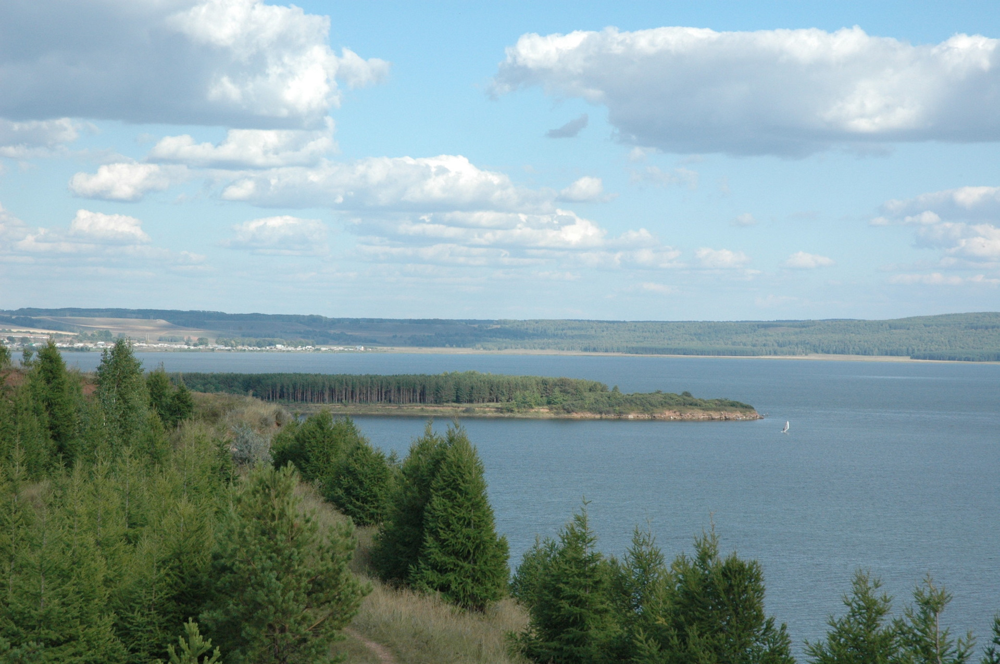
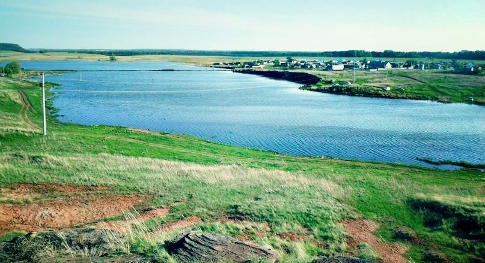
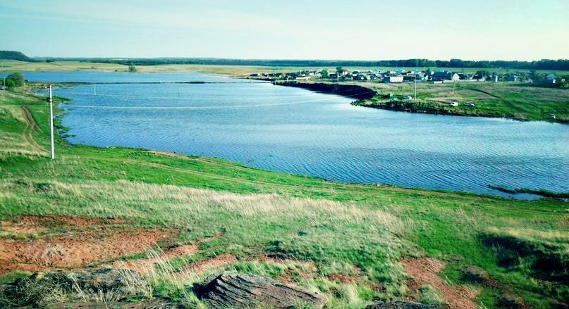

Шумиловский водопад

Шумиловский водопад находится в Приуралье, в Туймазинском районе республики Башкортостан, на Бугульминско-Белебеевской возвышенности, вблизи деревни Чапаева. Является памятником природы с 2010 года.
Водопад необычен тем, что находится вдали от ближайших гор, а вода стекает со значительной высоты по склону невысокого скалистого холма, с уровня почти половины его высоты.
Водопад представляет собой множество струек воды, падающих с трехметрового уступа скалы, и образующих водную завесу, искрящуюся на солнце. За водной стеной водопада находится небольшой грот.
Удивительно то, что стены грота не карстовые, а натечные: состоят из окаменевшего мха и отложений кальцитов, в точности как сталактиты в пещерах. Да и сами сталактиты растут на уступе скалы, с которого падают струйки водопада.
Да и вся поверхность скалы рядом с водопадом - это результат многовековых отложений кальцитов на мху, так что все камни неожиданно оказываются пористыми, ажурными и очень непрочными
Нарыш-тау
Именно здесь, в начале Уральских гор, находится гора Нарыш-тау, высота которой составляет 349 метров над уровнем моря. Любители активного отдыха, а также начинающие и экстремально настроенные туристы смогут совершить неспешное восхождение на гору. Её склоны достаточно пологие, и вам не составит труда оказаться на вершине.
Удивительный вид с горы открывается на город Октябрьский и на равнину, переходящую в Оренбургские степи.
Поднимаясь на гору, по пути можно встретить огромное разнообразие полезных ископаемых, драгоценных камней, минералов (кварц, золото, мрамор, гранит), ракушек и многое другое
Кандрыкуль

Кандрыкуль – второе по величине озеро Башкирии (после Аслыкуля), притягивающее летом на свои берега множество отдыхающих. Озеро широко славится чистой прозрачной водой, прекрасной для купания и отдыха на воде.
Сотая скважина
Памятник трудовой славы – скважина № 100 – первооткрывательница девонской нефти в Туймазинском районе. Находится в г. Октябрьском, посёлке Нарышево, на склоне горы Нарыш-тау.
В конце 1943 года начато строительство разведочной буровой № 100. С 26 сентября 1944 по 1 февраля 1968 года скважина была в эксплуатации. На скважине сохранена эксплуатационная вышка и установлены бетонные стелы: одна с надписью: «Скважина № 100 положила начало разработке Девонских пластов в Волго-Уральском регионе. Пробурена 26 сентября 1944 г. бригадами мастеров В.Н. Андрияшина и А.Т. Трипольского», вторая изображает стилизованный фонтан нефти. Решением Октябрьского горсовета народных депутатов от 12.02.1981 г. памятник взят под госохрану.
Туймазинское водохранилище
 

Одно из крупнейших гидротехнических сооружений республики. Расположено в долине реки Нугуш. Построено в 2007 году, является основным источником питьевой воды для Туймазов и Туймазинского района.
Площадь водохранилища - 485 га, средняя глубина - 4,5 м, максимальная -10 м. Длина дамбы - 800 м.
Его строительство сравнивают с возведением крупных водохранилищ в период существования Советского Союза, когда под воду уходили села и небольшие города. Здесь все обошлось - строителям пришлось лишь вырубить 120 га леса и расчистить дно будущего водоема.
Рукотворное озеро расположилось в обширной долине между селами Бикметово, Аднагулово и Нижний Сардык. Вокруг него находится множество небольших возвышенностей, высота которых составляет чуть больше 100 метров. Совершить на них восхождение стоит хотя бы для того, чтобы оценить всю красоту и величие водохранилища. На склонах холмов встречаются песчаниковые останцы, которым ветер придал причудливые формы.
Икские пещеры
Уникальный памятник природы, образованный в результате воздействия воды на скальные породы.
Впервые Икские пещеры исследовали несколько столетий назад. Вот выдержки из "Описания достопамятной пещеры, находящейся на берегу реки Ика" географа Николая Рычкова, датированные 1769 годом: "Отверстие, ведущее во внутренность сей пещеры, сокрыто во глубине круглой, при этом весьма крутой ямы, стоящей на ровном месте, в которую, спустившись, видима низкая лазея, служащая вратами подземных храмин. <<Чем дальше проходил я во внутренности подземной сей храмины, тем холод становился жесточае и, наконец, к вящему моему удивлению, увидел я, что испод сей пещеры покрыт столь крепким льдом...>>.